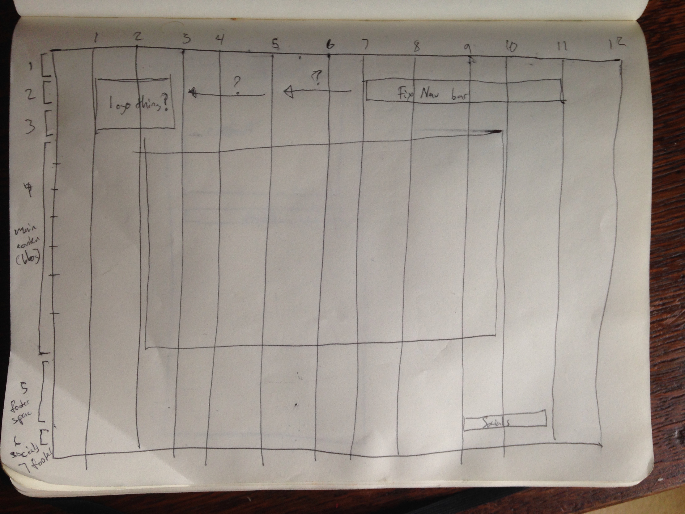

Building a responsive website is crucial if you want it to be accessible from all devices. A responsive site means that it is coded to responds to the screen-size with which it is being viewed. The structure of a responsive website is coded to change depending on the screen size of the device you're viewing it on.
Mobile first is a technique which designs a site to be displayed on a phone or small tablet and and then adds additional code so as to reformat the website if it being viewed via a larger screen. Up until recently sites were designed mainly for laptops and desktops however smart phones have become so prevalent that developers started working with mobile first design.
A common way to brainstorm the design and layout for a site is making a wireframe. A wireframes is a simple drawing of the webpage you want to create without needing to code anything, once you have a wireframe you like it's much easier to identify the elements you will need to code and understand how to translate the visual into html, css and any other languages.
I had some issues with my wireframe because I have very little experience in coding and wasn't able to figure out how to code everything I had in my wireframe. I know I'll be able to figure them out in the future but after spending over 10 hours I needed to move on to other lessons. The most difficult part was creating a dropdown menu and I still haven't figured out how to properly format it. I also wanted to add social media icons to my page but didn't have time after struggling with the dropdown menu.
